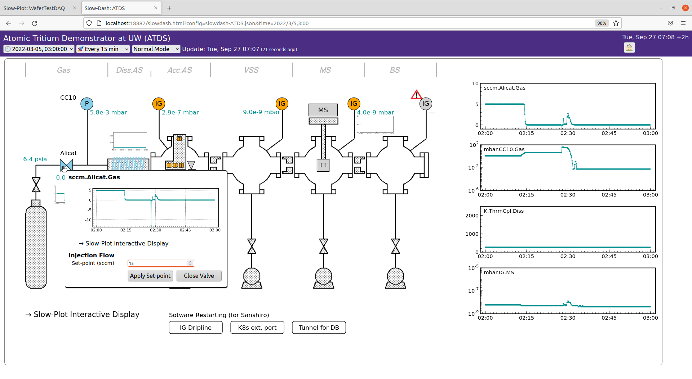
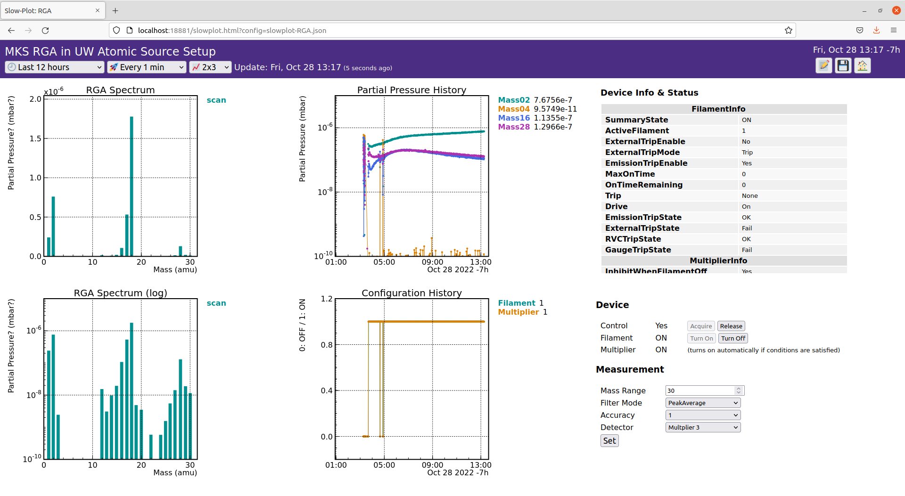
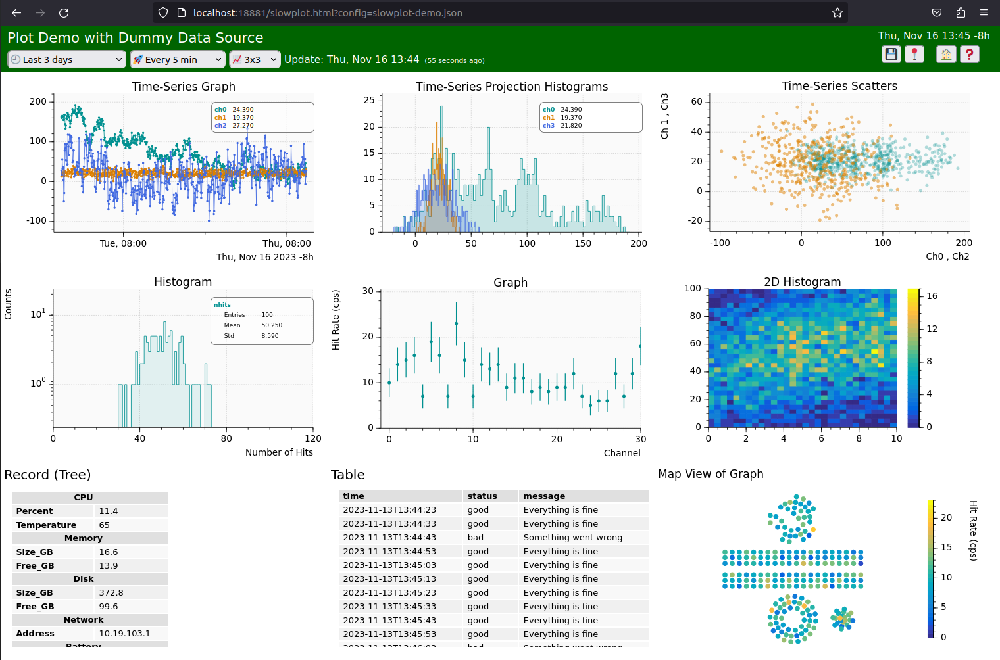
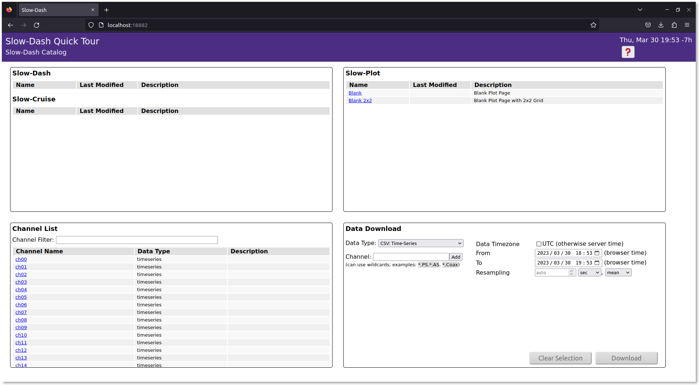

スローコントロールのダッシュボードを Grafana で作らされた経験に基づいて開発が開始されました．おおまかには，
ための Web ベースのソフトウェアです．ブラウザ側の JavaScript と，サーバー側の Python で構成されています．
もともとはスローコントロール用でしたが，現在では物理実験に関わる全てのデータのビジュアライズと，DAQ を含むシステムコントロールの UI を目指して開発をしています．現時点で，Grafana で行うようなビジュアライゼーションの部分はほぼ実装済みで，解析およびコントロールの部分が開発中です．
データベースアクセス以外は外部ライブラリを使っておらず，ソフトウェアの寿命が外のライブラリの変更等に影響されることはないようになっています．特に，流行り廃れが激しい JavaScript の部分はフレームワークなどは使わず，完全に自己完結です（使っていたけど排除しました）．データベース側および解析モジュールは，全て独立なプラグインとなっており，いつでも切り捨てられます．依存性がないので，インストールがとても楽です．それでもインストールをしたくない人のために，Docker コンテナも提供されています．
 
Grafana と似たビジュアライゼーション（ほぼ実装済み）
Grafana と違って，物理屋に使いやすいようになっています（ほぼ実装済み）:
さらに，コントロール用の機能も実装しています（８割くらい完成）:
将来的には，
Grafana にあって今の SlowDash にないもの（将来は実装されるかも）：
実験でよく使われるけど，今の SlowDash にないもの：
JSROOT や Bokeh との違い：
SlowDash と Grafana にあるけど JSROOT/Bokeh にない機能
SlowDash と LabVIEW UI にあるけど JSROOT/Bokeh にない機能
数値データでなくても良い．ログメッセージとか，ステータス一覧とか，写真とか
JSROOT や Bokeh でできて，今の SlowDash にないけど，やりたいこと（できる気がするもの）
もはや当たり前だけど，みんな書いているので，いちおう書いておきます．
Docker があれば，DockerHub または GitHub CR にある SlowDash のイメージがすぐに利用できます (Linux / Windows WSL / MacOS)．
ただ，最初から Docker を使うと設定ファイルの扱いなどが面倒だと思います．ここでは，最後に Docker を使う手順を解説します．
基本的に Python 3 が動けばすぐ使えます．
ここでのインストールでは，venv を使用してそこに必要なパッケージをインストールするので，手動で準備をする必要はありません．
もし venv を使用しない場合は，以下のパッケージを手動で入れてください．
pip install uvicorn）．| データベース | Python パッケージ | 備考 |
|---|---|---|
| PostgreSQL | psycopg2 |
システムライブラリ libpq も必要 |
| MySQL | mysqlclient |
|
| SQLite | 追加パッケージは不要 | |
| InfluxDB | influxdb-client |
|
| Redis | redis |
|
| MongoDB | pymongo |
|
| CouchDB | couchdb |
GitHub からダウンロードできます．
サブモジュールを使っているので，--recurse-submodules
オプションをつけてください．
$ git clone https://github.com/slowproj/slowdash.git --recurse-submodules(git コマンドが利用できない場合，github のページ
からパッケージをダウンロードすることもできます．）
これで，slowdash
というディレクトリが作成されます．インストールおよび次の Quick Tour
では，全てのファイルは slowdash
のディレクトリ以下に作られるので，この過程でユーザのシステムが汚されることはありません．また，このディレクトリを削除すれば，全てをなかったことにできます．
公式ドキュメントは，展開したディレクトリの docs
以下にあります．index.html をブラウザで開いてください．
$ firefox slowdash/docs/index.html（macOS 等では，firefox
コマンドを直接実行するのではなく，open
コマンドを介するようです．）
日本語の隠しドキュメントは FirstStep-JP.html
です．今読んでいるものですが，docs
から読むと内部リンクが切れていません．
$ firefox slowdash/docs/FirstStep-JP.html$ cd slowdash
$ make
$ make venvこれで，Python 周りのセットアップと，作成した venv へのパッケージのインストールを行います．
venv を使わない場合は，最後の make venv
は必要ありません（ファイルをコピーするだけなので一瞬で終わります）．もし間違えてやってしまった場合は，slowdash
ディレクトリの下にある venv
ディレクトリを削除してください．
以上により，slowdash/bin
の下に環境変数を設定するスクリプト slowdash-bashrc
ができるので，これを source してください．
$ source PATH/TO/SLOWDASH/bin/slowdash-bashrc設定ファイルの source
は，新しいターミナルを開くたびに毎回必要です． SlowDash
を継続的に使うなら，上記の行を .bashrc
などに書いておくと毎回やる必要がなくなります．ちなみに中身はこんな感じです（この中では
venv の設定はしていないので，他の Python
と干渉することはないです）：
export PATH="$PATH:/PATH/TO/slowdash/bin"
export PYTHONPATH="$PYTHONPATH:/PATH/TO/slowdash/lib/slowpy"インストールが成功したかは，slowdash
コマンドを実行してチェックできます． (slowdash コマンドは
slowdash/bin の下にあります）
$ slowdash
Running in venv at /PATH/TO/SLOWDASH/venv
usage:
Web-Server Mode: slowdash.py [Options] --port=PORT
Command-line Mode: slowdash.py [Options] COMMAND
Slowdash Version 250128 "Skykomish"
positional arguments:
COMMAND API query string. Ex) "config", "channels", "data/CHANNELS?length=LENGTH"
options:
-h, --help show this help message and exit
-p PORT, --port PORT port number for web connection; command-line mode without this option
--project-dir PROJECT_DIR
project directory (default: current dir if not specified by SLOWDASH_PROJECT environmental
variable)
...任意のポート番号を指定して slowdash
コマンドを実行し，ブラウザとの接続を確認してください．ここで，プロジェクトがないという警告が出ますが，今はこのまま先に進みます．
$ slowdash --port=18881
23-05-15 20:12:35 WARNING: unable to find Slowdash Project Dir: specify it with the --project-dir option, set the SLOWDASH_PROJECT environmental variable, or run the slowdash commands at a project directory
listening at port 18881$ firefox http://localhost:18881成功すれば以下のようなエラーメッセージが表示されます．
確認したら，Ctrl-c で slowdash
コマンドを終了してください．
アップデートは，make で行うのが簡単です．
$ cd PATH/TO/SLOWDASH
$ make updateあるいは，以下のように手動で行っても構いませんが，--recurse-submodules
をつけるのを忘れないようにしてください：
$ cd PATH/TO/SLOWDASH
$ git pull --recurse-submodules
$ makeアップデート直後は，ブラウザのキャッシュに古いスクリプトが残っていることがあります．動作がおかしい場合は，Ctrl-F5
など（ブラウザにより微妙に異なる）で強制リロードを行ってください．（状況が許すなら，キャッシュの全削除をするのが確実です．すいません．この問題はいずれちゃんと対応します．）
ダミーデータを使って SlowDash の UI
をテストするプロジェクトがあるので，これを使ってとりあえず動かしてみます．展開した
SlowDash ディレクトリの下にある ExampleProjects の
DummyDataSource に cd して，そこから
slowdash を走らせてください．
$ cd PATH/TO/SLOWDASH/ExampleProjects/DummyDataSource
$ slowdash --port=18881プラウザを立ち上げて http://localhost:18881
に接続すると作成済みページの一覧が表示されます．右上の SlowPlot にある
demo
をクリックすると，以下のようなプロットのデモページが表示されます．データに意味はなく，更新するたびに中身が変わりますが，SlowDash
の表示要素の操作を一通り試してみることができます．

ここでは，公式ドキュメントの Quick Tour の前半くらい，時系列データのプロットを作るところまでやってみます．
テスト用のデータストアには，SQLite を使います．これは，追加のライブラリをインストールせずに使用でき，また，データがファイルに保存されるため，使用後のクリーンアップが簡単なためです．
最初に，プロジェクト用のディレクトリを作成してください．ディレクトリを作る場所はどこでもいいです．このプロジェクトで作成されるファイルは全てこのディレクトリ以下に格納されます．プロジェクト終了後はディレクトリをまるごと削除しても大丈夫です．途中でプロジェクトディレクトリを別の場所へ移動することも可能です．
$ mkdir QuickTour
$ cd QuickTourSlowPy は，SlowDash に含まれる Python
のライブラリです．上記のインストールで，source slowdash/bin/slowdash-bashrc
をしていれば，SlowPy のパスが環境変数 PYTHONPATH
に追加れていて，すでに使えるようになっています．
SlowPy を使って，一秒ごとに乱数の値を SQLite に書き込むスクリプトを作成します．
from slowpy.control import DummyDevice_RandomWalk, ControlSystem
from slowpy.store import DataStore_SQLite, SimpleLongFormat
class TestDataFormat(SimpleLongFormat):
schema_numeric = '(datetime DATETIME, timestamp INTEGER, channel STRING, value REAL, PRIMARY KEY(timestamp, channel))'
def insert_numeric_data(self, cur, timestamp, channel, value):
cur.execute(f'INSERT INTO {self.table} VALUES(CURRENT_TIMESTAMP,%d,"%s",%f)' % (timestamp, channel, value))
datastore = DataStore_SQLite('sqlite:///QuickTourTestData.db', table="testdata", format=TestDataFormat())
device = DummyDevice_RandomWalk(n=4)
def _loop():
for ch in range(4):
data = device.read(ch)
datastore.append(data, tag="ch%02d"%ch)
ControlSystem.sleep(1)
def _finalize():
datastore.close()
if __name__ == '__main__':
ControlSystem.stop_by_signal()
while not ControlSystem.is_stop_requested():
_loop()
_finalize()このスクリプトの詳細は公式ドキュメントの Controls
セクションに説明があります．ここでは，上記の内容をコピペして，generate-testdata.py
というファイル名でプロジェクトディレクトリに保存してください．
このスクリプトを走らせると，テスト用のデータファイルが生成されます．
$ python3 generate-testdata.py（もしコピペに失敗してエラーが出るようであれば，同じ内容のファイルが
slowdash/ExampleProjects/QuickTour/config/slowtask-testdata.py
にあります．）
10 秒くらい経過したら Ctrl-c
で止めて，できたファイルを確認してください．
$ ls -l
-rw-r--r-- 1 sanshiro sanshiro 24576 Apr 11 16:52 QuickTourTestData.db
-rwxr-xr-x 1 sanshiro sanshiro 3562 Apr 11 16:51 generate-testdata.pyデータの中身は sqlite3
コマンドで確認できます．（このコマンドがインストールされてなければ，この手順は飛ばしていいです．）
$ sqlite3 QuickTourTestData.db
SQLite version 3.31.1 2020-01-27 19:55:54
Enter ".help" for usage hints.
sqlite> .table
testdata
sqlite> .schema testdata
CREATE TABLE testdata(datetime DATETIME, timestamp INTEGER, channel TEXT, value REAL, PRIMARY KEY(timestamp, channel));
sqlite> select * from testdata limit 10;
2023-04-11 23:52:13|1681257133|ch00|0.187859
2023-04-11 23:52:13|1681257133|ch01|-0.418021
2023-04-11 23:52:13|1681257133|ch02|0.482607
2023-04-11 23:52:13|1681257133|ch03|1.733749
...sqlite3 の .schema
コマンド出力にあるとおり，データは testdata
というテーブルに保存されていて，その構造は以下のようになっています．
testdata(datetime DATETIME, timestamp INTEGER, channel TEXT, value REAL, PRIMARY KEY(timestamp, channel))テスト目的のために，データのタイムスタンプは日付時刻型（SQLite では ISO 表記の文字列）のものと，整数の UNIX 時間の両方が入っていますが，通常はどちらか一方のことが多いと思います．SQLite では，タイムゾーンの扱いに罠が多いので，UNIX 時間の方がいいかもしれません．
データの中身はこんな感じです:
| datetime (DATETIME/TEXT) | timestamp (INTEGER) | channel (TEXT) | value (REAL) |
|---|---|---|---|
| 2023-04-11 23:52:13 | 1681257133 | ch00 | 0.187859 |
| 2023-04-11 23:52:13 | 1681257133 | ch01 | -0.418021 |
| 2023-04-11 23:52:13 | 1681257133 | ch02 | 0.482607 |
| 2023-04-11 23:52:13 | 1681257133 | ch03 | 1.733749 |
| … |
ここでは，面倒な例として，日付時刻型のデータにタイムゾーンを明示しないで UTC 時刻を使用しています（SQLite ではこれがデフォルトの関数が多いです）．通常は，タイムゾーン付きまたは UNIX 時間を使用してください．
時系列データのテーブルは，必ずしもこの形になっている必要はありません．特に，テーブルにカラムを追加するのが簡単なタイプのデータストアを使用している場合は，各チャンネルを各カラムにするのも普通にアリだと思います．同時に読み出したデータのグルーピングが簡単になるというメリットもあります．詳しくは，公式ドキュメントの Data Binding の章を参照してください．
SlowDash のプロジェクトでは，通常，専用のディレクトリを作って，そこに
SlowdashProject.yaml
という名前のプロジェクト設定ファイルを置きます．（データファイルを直接読む場合などの例外はあります．）どこのデータベースからどのようなデータを読むかなどを，このプロジェクト設定ファイルに記述します．
プロジェクトディレクトリに，以下の内容で
SlowdashProject.yaml
という名前のファイルを作成してください．
slowdash_project:
name: QuickTour (なんでも良いが，スペースや特殊文字を含まない方が人生が楽になる)
title: SlowDash Quick Tour （なんでも良いが，改行や極悪な文字は含まない方がいいと思う）
data_source:
type: SQLite
parameters:
file: QuickTourTestData.db
time_series:
schema: testdata[channel]@timestamp(unix)=valueschema
のところで，データのテーブル名と，どの情報がどのカラムに書かれているかを記述しています．フォーマットは，テーブル名 [チャンネル情報のカラム名] @ 時刻情報のカラム名（時刻の表現形式）= データ値のカラム名
みたいな感じです．詳しくは，DataBinding
の章を参照してください．
この例では，時刻情報に，UNIX
タイムスタンプの方を使っています．DateTime
型の方の時刻情報を使う場合は，schema
の記述を以下のようにしてください：
time_series:
schema: testdata[channel]@datetime(unspecified utc)=valueここでは，UTC
時刻がタイムゾーン指定なしで使われている悪い例に対応するために，時刻表現形式を
unspecified utc (「書いてないけど UTC
だよ」)と伝えています．保存されているデータがちゃんとタイムゾーン付きの場合は
with timezone または aware
を，最悪のケースでタイムゾーンなしでローカルタイムが使われている場合は
without timezone または naive
と書いてください．この情報は，SlowDash
がクエリを構築する際に，データと同じ時刻表現を使用するために使われます．タイムゾーンを明示しないでローカルタイムを使った場合の惨事が多数報告されているので，新しく作るデータで
without timezone
を選択する理由はないです．（日本国内だけなら関係ないと思ってすでにそういう形式でデータを取ってる場合は，夏時間の導入に反対しておいた方がいいです．）
slowdash config
コマンドで設定情報の一部が表示されるので，設定ファイルが読めているかのチェックができます．これは，SlowdashProject.yaml
ファイルを作成したプロジェクトディレクトリで実行してください．
$ slowdash config
{
"project": {
"name": "QuickTour",
"title": "SlowDash Quick Tour",
"error_message": ""
},
"data_source_module": [
"datasource_SQLite.py"
],
"user_module": [],
"style": null
}データベースに正しくアクセスできる場合，slowdash channels
コマンドでチャンネルの一覧を表示できます．
$ slowdash channels
[
{"name": "ch00"}, {"name": "ch01"}, {"name": "ch02"}, ...
]データの中身は，slowdash data/CHANNEL
コマンドで見ることができます．
$ slowdash "data/ch00?length=10"
{
"ch00": {
"start": 1680223465, "length": 10,
"t": [0.0, 2.0, 3.0, 4.0, 5.0, 6.0, 7.0, 8.0, 9.0],
"x": [5.180761, 5.92074, 5.515459, 4.883299, 5.650556, 4.284527, 3.884656, 3.223627, 2.06343]
}
}もう気づいたかもしれませんが，slowdash
コマンドの第１引数は HTTP でアクセスした場合の URL
で，出力はそのリプライです．
SlowDash にネットワークからアクセスするために，--port
オプションで適当なポート番号を指定します．これで，コマンドを HTTP
経由で受け取るようになります．
$ slowdash --port=18881SlowDash を走らせたままブラウザを立ち上げ，使ったポートに接続してください．
$ firefox http://localhost:18881今回はプロジェクト付きで走らせているので，以下のようなスタートページが表示されるはずです．

テスト用のデータベースにデータを継続的に記録するため，別ターミナルで先程のデータ生成プログラムを走らせてください．
(別ターミナルを開く)
$ cd PATH/TO/MySlowDashProject
$ python3 ./generate-testdata.pyデータサイズは一時間で 5MB
程度なので，しばらくは走らせ続けて大丈夫です．データファイル（QuickTourTestData.db）は，SlowDash
が走ってなければ，いつ消しても構いません．またデータが欲しくなったら，再度
generate-testdata.py
を走らせてください．（データファルを削除せずに走らせても問題ありません．複数同時に走らせたら変なことになると思います．）
プログラムの終了は，全て Ctrl-c
です．それなりに上品に止まります．だめだったら，Ctrl-\
を使ってください．
ブラウザ上の青い文字のところをクリックすればいろいろとプロットを作成できます．上部の紫色は，東北大学とワシントン大学の共通テーマカラーなので我慢してください．（プロジェクト設定ファイルで変更できます．Project Setup の章に説明があります．）
右下の Tools にある New Plot Layout
で新しい空のページを作ります．その中で，Add a New Panel
を選んで，プロットを作成していきます．たぶん自明です．
左上の Channel List のチャンネル名をクリックすると，直近の時系列データのプロットを含んだページが作成されます．それを元にいろいろ追加していくこともできます．
ここまでの準備では時系列データしか生成していないので，すぐにできるのは，それを直接プロットする
Time-Axis Plot (Time-Series) と，値分布のヒストグラムを作る
XY Plot (Histograms and Graphs) →
Histogram of Time-Series Values
です．ここから先は，公式ドキュメントの UI Panels
の章などを参照してください．
DockerHub と GitHub に SlowDash のコンテナイメージがあります．どちらも同じです．
コンテナ内での SlowDash プロジェクトディレクトリは
/project
です．これをボリュームマウントして使ってください．以下は，SlowdashProject.yaml
ファイルが作ってあるプロジェクトディレクトリからコンテナの SlowDash
サーバーを実行する例です．
$ docker run --rm -p 18881:18881 -v $(pwd):/project slowproj/slowdash毎回打つのは大変なので，docker-compose.yaml
を使うのが簡単です．SlowDash の ExampleProjects
以下にあるプロジェクト例には，すべて docker-compose.yaml
ファイルが含まれています．
services:
slowdash:
image: slowproj/slowdash
volumes:
- .:/project
ports:
- "18881:18881"このファイルがある場所で docker compose up
とすればイメージがダウンロードされ，実行が開始されます．（初回は少し時間がかかります．）
$ docker compose upSlowDash のコマンドを使用したい場合，docker run または
docker compose up
でコンテナを走らせてから，docker exec
でコンテナの中から実行してください．
$ docker ps
CONTAINER ID IMAGE COMMAND CREATED STATUS PORTS NAMES
70e0b99483ae slowdash "/slowdash/app/docke…" 10 seconds ago Up 9 seconds 18881/tcp elastic_jackson
$ docker exec -it 70e slowdash config -i4 （70e は上の行で表示されているコンテナID； -i4 は整形オプション）
{
"slowdash": {
"version": "250128 \"Skykomish\""
...SlowDash をアップデートする際は，使用中のコンテナを “down” してから，ダウンロードしてあるイメージを削除してください．次の実行時に自動で新しいイメージがダウンロードされます．（これをするとプロジェクトディレクトリ以外の場所に保存していたものは失われます．独自の拡張をしている場合は注意してください．）
$ docker compose down
$ docker rmi slowproj/slowdashちなみに，使用中のバージョンは，slowdash config
で表示される他，SlowDash のホーム画面の左上にも表示されています．
SlowDash
を使用したシステムの開発に本番用のデータベースを使いたくない場合や，開発用サーバのインストールが面倒な場合，データベースとかだけのコンテナが
slowdash/utils/testbench
にあります．これを利用すれば，PostgreSQL や InfluxDB
などのデータベース，Redis や Jupyter
などが即使えて，使用後にすぐにクリーンアップできます．
$ cd PATH/TO/SLOWDASH/utils/testbench
$ docker compose up
$ docker compose down （終了後データを消す）SlowDash をコンテナ内で使用する場合で，設定ファイルやスクリプトの開発に毎回コンテナを起動するのが面倒なときにも，このテストベンチを走らせるとコンテナ外で作業を行えて便利です．
SlowDash は，ファイアウォールの内部で使う目的で作られています． このためセキュリティ関係の機能は実装されていません．SlowDash のポートを外部からアクセスできるところに開けないようにしてください．外部からは，VPN もしくは SSH のトンネルを経由して使用するのが想定です．
もし内部の人を信用できない場合，最低限として，基本認証を使ってパスワードを設定することはできます．この場合は，リバースプロキシを使って HTTPS に乗せ換え，パスワードと通信を暗号化してください．
基本認証の設定は，SlowdashProject.yaml に
authentication
エントリを追加し，パスワードハッシュを指定します．
slowdash_project:
...
authentication:
type: Basic
key: slow:$2a$12$UWLc20NG5E3drX35cfA/5eFxuDVC0U79dGg4UP/mo55cj222/vuRSパスワードハッシュは，Apache の bcrypt
と同じ形式ですが，slowdash/utils にある
slowdash-generate-key.py
プログラムで作ることもできます．
$ python3 PATH/TO/SLOWDASH/utils/slowdash-generate-key.py slow dash
{
"type": "Basic",
"key": "slow:$2a$12$UWLc20NG5E3drX35cfA/5eFxuDVC0U79dGg4UP/mo55cj222/vuRS"
}このプログラムの実行に bcrypt
パッケージを入れる必要があるかもしれません
(pip install bcrypt)．
リバースプロキシの設定方法については，大規模言語モデル系の AI が詳しく教えてくれます．もとのポートはちゃんと塞いでおいてください．
SlowDash を ASGI
モードで使っている場合，リバースプロキシの代わりに，組み込みの HTTPS
サーバーを使うこともできます．SSL/TLS 鍵ファイルと認証ファイルを指定して
slowdash を起動してください．
$ slowdash --port=18881 --ssl-keyfile=KEY_FILE --ssl-certfile=CERT_FILE
...
Listening at port 18881 (ASGI HTTPS)ただし，この機能は将来の SlowDash では削除されるかもしれません．長期使用するシステムでは，ちゃんとしたリバースプロキシを使用するのがいいと思います．Docker の場合は Compose とかで Nginx コンテナを含めるのが想定です．